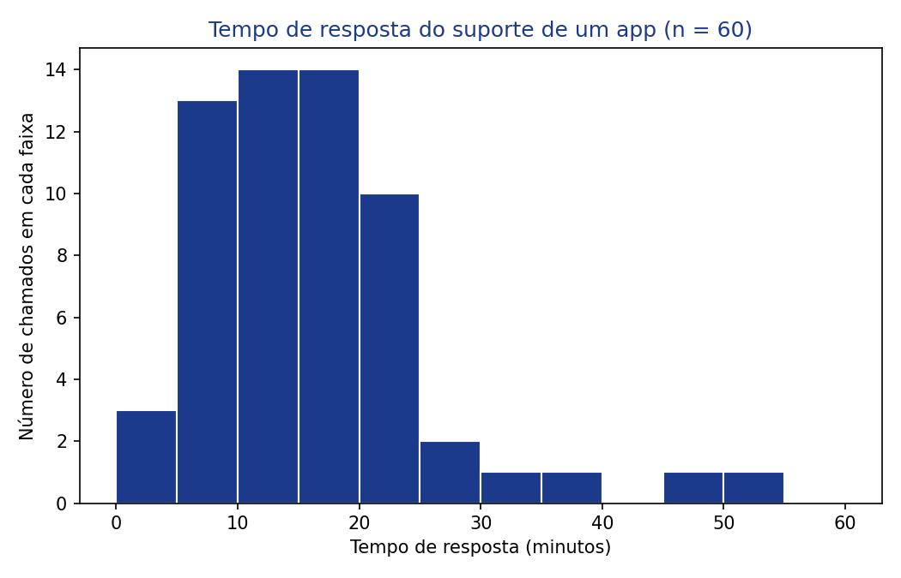
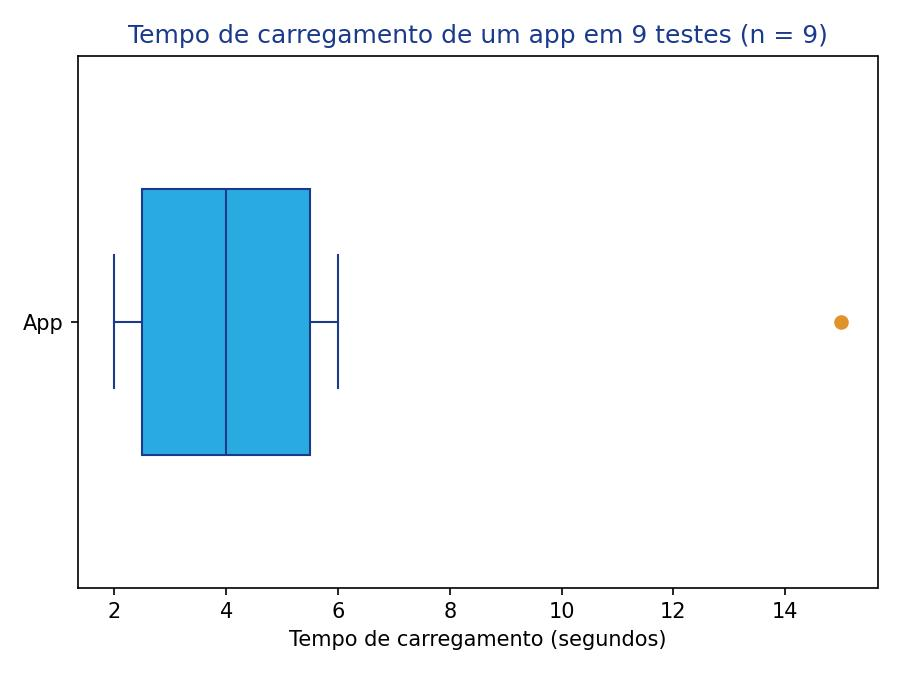
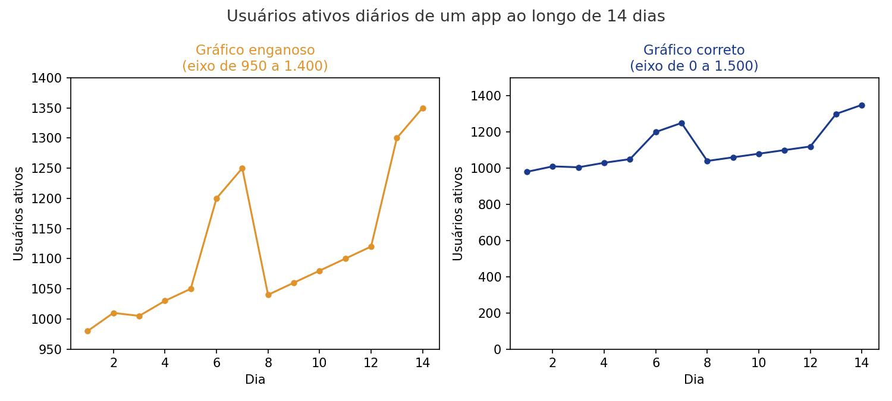

Como enxergar a forma dos dados numéricos?
Na Aula 4 vimos gráficos para categorias (pizza e barras). Dados numéricos, como tempo, idade ou preço, pedem outros tipos de gráfico. Nesta aula você vai conhecer o histograma, o boxplot e o gráfico de linha do tempo, três maneiras de enxergar a forma, o centro e a dispersão de dados numéricos, além de aprender a desconfiar de escalas que distorcem esses gráficos.
Objetivos de Aprendizagem
Ao término desta aula, vocês serão capazes de:
- Interpretar um histograma e reconhecer se os dados são simétricos ou assimétricos (à direita ou à esquerda);
- Relacionar a forma de um histograma com a posição da média e da mediana;
- Construir e interpretar um boxplot a partir do resumo de cinco números (mínimo, Q1, mediana, Q3, máximo);
- Interpretar um gráfico de linha do tempo, identificando tendências e padrões cíclicos;
- Reconhecer técnicas comuns de gráficos numéricos enganosos, como escalas cortadas e agrupamentos inadequados.
Seções de Estudo
- SEÇÃO 1 Histograma: a forma dos dados numéricos
- SEÇÃO 2 Boxplot: o resumo de cinco números
- SEÇÃO 3 Gráfico de linha do tempo e cuidados com escalas
Histograma: a forma dos dados numéricos
O histograma agrupa dados numéricos em faixas de valores (por exemplo, de 0 a 10, de 10 a 20...) e desenha uma barra para cada faixa, com altura igual à quantidade (ou percentual) de dados naquela faixa. Diferente do gráfico de barras, as barras do histograma ficam coladas umas nas outras, porque representam faixas contínuas de um mesmo intervalo, e não categorias separadas.

| Forma do histograma | O que indica |
|---|---|
| Simétrico | Média e mediana próximas |
| Assimétrico à direita | Média maior que a mediana (poucos valores altos puxam a média) |
| Assimétrico à esquerda | Média menor que a mediana (poucos valores baixos puxam a média) |
Boxplot: o resumo de cinco números
O boxplot (ou diagrama de caixa) resume um conjunto de dados numéricos em cinco números: o mínimo, o primeiro quartil (Q1), a mediana, o terceiro quartil (Q3) e o máximo. A caixa vai de Q1 até Q3 (contendo os 50% centrais dos dados), com uma linha na mediana; as "hastes" (linhas finas) se estendem até os valores mais extremos que não são outliers.
Para encontrar Q1 e Q3 sem fórmulas complicadas, use o método de dividir ao meio: ordene os dados, encontre a mediana; Q1 é a mediana da metade inferior dos dados, e Q3 é a mediana da metade superior.

| Estatística | Valor |
|---|---|
| Mínimo | 2 s |
| Q1 | 2,5 s |
| Mediana | 4 s |
| Q3 | 5,5 s |
| Máximo (sem contar o outlier) | 6 s |
Gráfico de linha do tempo e cuidados com escalas
O gráfico de linha do tempo (ou gráfico de linha) mostra como um valor numérico muda ao longo do tempo: o eixo horizontal representa o tempo (dia, mês, ano), e o eixo vertical representa o valor medido. Ele é ideal para identificar tendências (subindo, descendo, estável) e padrões cíclicos (que se repetem, como picos toda semana).

| Sinal de alerta | Por que desconfiar |
|---|---|
| Eixo vertical não começa em zero | Exagera oscilações pequenas |
| Escala muito esticada ou muito espremida | Distorce a impressão de tendência |
| Pontos no eixo do tempo com espaçamento desigual | Datas tratadas como rótulos, não como números reais |
| Contagem em vez de taxa | Não considera mudanças no tamanho da população ao longo do tempo |
Exemplo Matemático Resolvido
Usando os tempos de carregamento do app da Seção 2 (2, 2, 3, 3, 4, 4, 5, 6 e 15 segundos), calcule o IQR e confirme se 15 segundos é um outlier.
- Dados: valores ordenados = 2, 2, 3, 3, 4, 4, 5, 6, 15; mediana = 4; Q1 = 2,5; Q3 = 5,5
- Fórmula: IQR = Q3 − Q1; limite superior = Q3 + 1,5 × IQR
- Substituição: IQR = 5,5 − 2,5; limite superior = 5,5 + 1,5 × IQR
- Cálculo: IQR = 3; limite superior = 5,5 + 1,5 × 3 = 5,5 + 4,5 = 10
- Interpretação: qualquer valor acima de 10 segundos é considerado outlier. Como 15 segundos ultrapassa esse limite, ele é um outlier, confirmando o ponto isolado da Figura 2.
Exemplo em Python
O programa abaixo calcula o resumo de cinco números dos tempos de carregamento, verifica automaticamente se o maior valor é um outlier (repetindo os cálculos do exemplo resolvido) e usa o matplotlib para desenhar o boxplot correspondente.
import matplotlib.pyplot as plt
def mediana(lista):
ordenada = sorted(lista)
n = len(ordenada)
meio = n // 2
if n % 2 == 0:
return (ordenada[meio - 1] + ordenada[meio]) / 2
return ordenada[meio]
tempos = [2, 2, 3, 3, 4, 4, 5, 6, 15]
ordenados = sorted(tempos)
meio = len(ordenados) // 2
q1 = mediana(ordenados[:meio])
q3 = mediana(ordenados[meio + 1:])
iqr = q3 - q1
limite_superior = q3 + 1.5 * iqr
print(f"Q1: {q1}s | Mediana: {mediana(ordenados)}s | Q3: {q3}s")
print(f"IQR: {iqr}s | Limite superior: {limite_superior}s")
for valor in ordenados:
if valor > limite_superior:
print(f"{valor}s é um outlier")
plt.boxplot(tempos, vert=False, labels=["App"])
plt.xlabel("Tempo de carregamento (segundos)")
plt.title(f"Tempo de carregamento de um app em 9 testes (n = {len(tempos)})")
plt.savefig("boxplot_app.png")
Entrada: lista com os 9 tempos de carregamento.
Processamento: a função mediana é
reaplicada às metades inferior e superior da lista ordenada para
obter Q1 e Q3; em seguida calcula-se o IQR e o limite superior;
por fim, plt.boxplot desenha a caixa com esses
valores.
Saída: "Q1: 2.5s | Mediana: 4s | Q3: 5.5s", "IQR: 3.0s | Limite superior: 10.0s", "15s é um outlier" e a imagem da Figura 2.
Interpretação: o programa confirma, de forma automática, o mesmo resultado do exemplo resolvido: 15 segundos está acima do limite de 10 segundos, e por isso aparece isolado no boxplot.
Exercícios
Gabarito Comentado
Exercício 1
def mediana(lista):
ordenada = sorted(lista)
n = len(ordenada)
meio = n // 2
if n % 2 == 0:
return (ordenada[meio - 1] + ordenada[meio]) / 2
return ordenada[meio]
horas = [3, 5, 5, 6, 7, 8, 20]
ordenadas = sorted(horas)
meio = len(ordenadas) // 2
q1 = mediana(ordenadas[:meio])
q3 = mediana(ordenadas[meio + 1:])
print(f"Mínimo: {ordenadas[0]}h")
print(f"Q1: {q1}h")
print(f"Mediana: {mediana(ordenadas)}h")
print(f"Q3: {q3}h")
print(f"Máximo: {ordenadas[-1]}h")
Saída: "Mínimo: 3h", "Q1: 5h", "Mediana: 6h", "Q3: 8h" e "Máximo: 20h".
Comentário: aplicação direta do método de dividir ao meio da Seção 2. O valor 20h fica bem longe do Q3, um indício visual de outlier mesmo antes de aplicar a regra do 1,5 × IQR.
Exercício 2
def mediana(lista):
ordenada = sorted(lista)
n = len(ordenada)
meio = n // 2
if n % 2 == 0:
return (ordenada[meio - 1] + ordenada[meio]) / 2
return ordenada[meio]
chamados = [5, 6, 6, 7, 8, 9, 10, 40]
ordenados = sorted(chamados)
meio = len(ordenados) // 2
q1 = mediana(ordenados[:meio])
q3 = mediana(ordenados[meio:])
iqr = q3 - q1
limite_superior = q3 + 1.5 * iqr
print(f"Mínimo: {ordenados[0]} | Q1: {q1} | Mediana: {mediana(ordenados)}")
print(f"Q3: {q3} | Máximo: {ordenados[-1]} | IQR: {iqr}")
if 40 > limite_superior:
print(f"40 minutos é um outlier (limite: {limite_superior})")
else:
print(f"40 minutos não é um outlier (limite: {limite_superior})")
Saída: "Mínimo: 5 | Q1: 6.0 | Mediana: 7.5", "Q3: 9.5 | Máximo: 40 | IQR: 3.5" e "40 minutos é um outlier (limite: 14.75)".
Comentário: como n = 8 é par, Q1 e Q3 usam as metades inteiras (sem excluir a mediana). O chamado de 40 minutos fica bem acima do limite de 14,75, confirmando o outlier.
Retomando a Conversa Inicial
Seção 1, Histograma: agrupa dados numéricos em faixas e revela a forma da distribuição (simétrica ou assimétrica), ligada à posição da média em relação à mediana.
Seção 2, Boxplot: resume os dados em cinco números (mínimo, Q1, mediana, Q3, máximo) e identifica outliers pela regra de 1,5 × IQR.
Seção 3, Gráfico de linha do tempo: mostra tendências e padrões cíclicos ao longo do tempo, mas a escala do eixo vertical pode exagerar ou disfarçar essas variações.
Revisão Rápida
| Conceito | Fórmula | Erro comum | Dica de prova | Aplicação em Tecnologia |
|---|---|---|---|---|
| Histograma | máx − mínnº de faixas | Faixas largas ou estreitas demais | Relacione a forma com média x mediana | Tempo de resposta do suporte |
| Boxplot | IQR = Q3 − Q1 | Achar que caixa maior = mais dados | Cada seção do boxplot é sempre 25% | Tempo de carregamento de um app |
| Outlier | Q3 + 1,5 × IQR | Ignorar outliers ao interpretar o gráfico | Compare com o limite superior/inferior | Teste de carregamento com conexão ruim |
| Gráfico de linha do tempo | N/A | Não checar onde o eixo começa | Desconfie de eixos cortados | Usuários ativos diários de um app |
Sugestões de Leituras e Sites
LEITURAS
RUMSEY, Deborah J. Statistics For Dummies. 2. ed. Hoboken, NJ: Wiley Publishing, 2011. (livro-base desta aula, recomendado para aprofundamento em gráficos de dados numéricos.)
SITES
Khan Academy, Estatística e Probabilidade: https://pt.khanacademy.org/math/statistics-probability (aulas gratuitas em português sobre histogramas e boxplots.)
Glossário
| Termo | Definição |
|---|---|
| Histograma | Gráfico que agrupa dados numéricos em faixas, com barras coladas representando a frequência de cada faixa. |
| Assimetria à direita/esquerda | Forma de um histograma com uma cauda mais longa de um dos lados. |
| Boxplot | Gráfico que resume dados numéricos em cinco números: mínimo, Q1, mediana, Q3 e máximo. |
| Quartil (Q1, Q3) | Valores que dividem os dados ordenados em quatro partes iguais. |
| IQR (amplitude interquartil) | Diferença entre Q3 e Q1; mede a dispersão dos 50% centrais dos dados. |
| Gráfico de linha do tempo | Gráfico que mostra a variação de um valor numérico ao longo do tempo. |
Referências Bibliográficas
TRIOLA, Mario F. Introdução à Estatística. 14. ed. Rio de Janeiro: LTC, 2024. E-book. p.Capa. ISBN 9788521638780. Disponível em: https://integrada.minhabiblioteca.com.br/reader/books/9788521638780/. Acesso em: 01 dez. 2025.
VIEIRA, Sonia. Estatística básica – 2ª edição revista e ampliada. 2. ed. Porto Alegre: +A Educação - Cengage Learning Brasil, 2018. E-book. p.Cover. ISBN 9788522128082. Disponível em: https://integrada.minhabiblioteca.com.br/reader/books/9788522128082/. Acesso em: 01 dez. 2025.